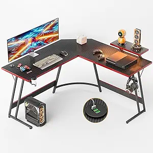
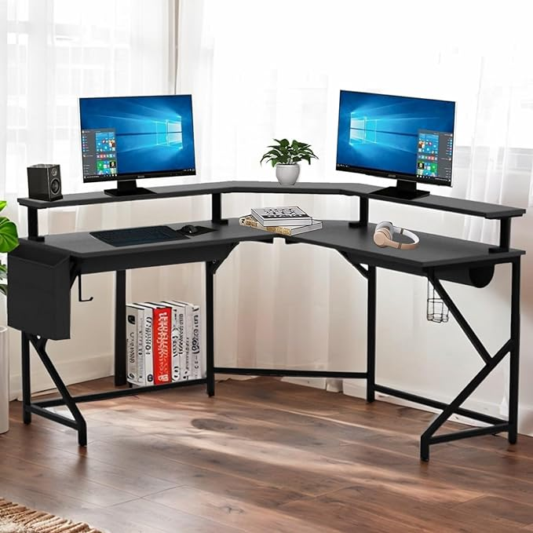
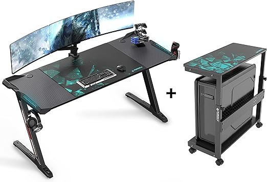
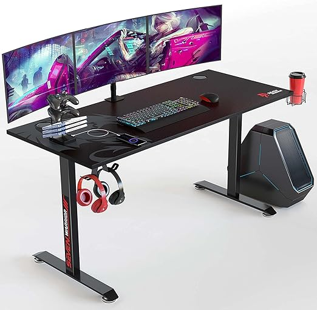
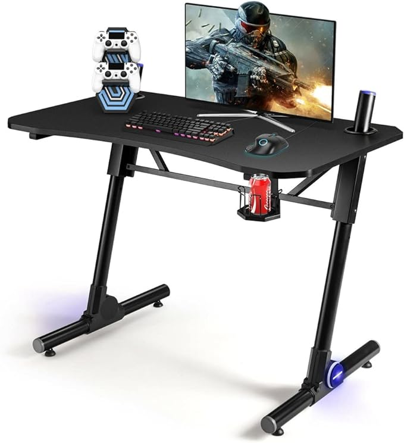
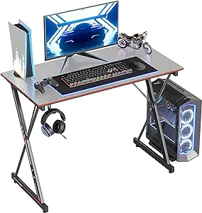

¿CÓMO ELEGIR UN ESCRITORIO GAMER?
Todo gamer está pensando en construir un setup que llene sus necesidades y, por supuesto, satisfaga sus
gustos y estilo.

A continuación te daremos diversas cualidades de cada uno de los escritorios para que puedas formarte una
opinión sobre cuál es el que mejor se ajusta a tus necesidades de juego.
✅ ESTILO
Los escritorios gamer se crearon de forma especializada para cubrir cada una de las necesidades de los
jugadores, es por esto que cuentan con todo el estilo desde su construcción. Estos los puedes encontrar con
diversos colores, con luces RGB y por supuesto, con temáticas relacionadas a los juegos de moda.
✅ COMODIDAD
Los escritorios gamer están diseñados para generar la comodidad que todo jugador debe tener. Al estar
creados pensando en las necesidades de los jugadores, es que estos vienen a la altura precisa y con los
componentes adecuados. Existen algunos escritorios gamer que vienen con un kit de accesorios incorporado
para que el jugador no tenga que comprar aparte nada. Todo incluido.
✅ TAMAÑO
Como mencionamos al principio del artículo, a los jugadores sí les importa el tamaño. Existen cubiertas
desde las más pequeñas para los mini gamers o para los que tienen menos espacio en su casa como cubiertas XL
de sobre 150 cm para los jugadores que necesitan tener un lugar amplio para demostrar todas sus habilidades.
Lo importante es que están diseñados para todo gusto.
✅ DISEÑO
Otra de las cualidades de estos escritorios es que innovan con los diseños. Existen escritorios con diversas
formas de patas: En I, en Z, en K, en X, en Y. Existen escritorios que son eléctricos o que son ajustables a
la altura. Todas estas formas pensadas no solo en el estilo, sino que también en la resistencia del
escritorio.
✅ DURABILIDAD
Como están diseñados para jugadores que están muchas horas jugando y que interactúan directamente con el
escritorio, tanto cuando pierden como cuando ganan, la resistencia es primordial en estos. Por lo que los
materiales que lo conforman se convierten en un aspecto importante a elegir.
Ejemplo de escritorio gemer:
OPCIONES DE ESCRITORIOS GAMER
•QIAYA Escritorio esquinero para computadora de juegos en forma de L, negro

PRECIO: $98.00
-Marca QIAYA
-Dimensiones del producto 51"prof. x 51"an. x 29,9"al. pulgadas
-Color Negro -
-Estilo Moderno
-Material de la base Madera de ingeniería
-Tipo de material superior Carbon Fiber
-Tipo de acabado Acero
-Características especiales Salida USB incorporada, Soporte para monitor
-Tipo de montaje Montaje en Piso
-Material de patas del mueble Metal
•EUREKA ERGONOMIC Escritorio de juegos en forma de Z

PRECIO: 269.99
-Marca EUREKA ERGONOMIC
-Forma Rectangular
-Dimensiones del producto 24"prof. x 60"an. x 22,56"al. pulgadas
-Estilo Escritorio para juegos en forma de Z con soporte de torre para computadora
-Características especiales Ajustable
-Tipo de sala Oficina
-Tipo de montaje Montaje en suelo
-Rango de edad (descripción) Adult
-Se requiere ensamblado Sí
•SEVEN WARRIOR Escritorio para juegos

PRECIO: $174.99
-Marca SEVEN WARRIOR
-Dimensiones del producto 23,6"prof. x 55"an. x 29,5"al. pulgadas
-Color Negro
-Estilo Moderno
-Material de la base Acero aleado
-Tipo de material superior Superficie de fibra de carbono y tablero de partículas
-Tipo de acabado Laminado
-Características especiales Con alfombrilla de mouse de escritorio completo
-Tipo de sala Oficina
-Tipo de montaje Montaje en Piso
•SDGH - Escritorio multifuncional

PRECIO: $3,405.39
- Dimensiones del producto 23,5"prof. x 43,5"an. x 27"al. pulgadas
-Color negro
-Estilo Gaming-
-Material de la base Iron
-Tipo de acabado Wood
-Características especiales Ajustable
-Tipo de sala Sala de estudio
-Tipo de montaje encontrado en la imagen
-Rango de edad (descripción) Adult
-Peso del artículo 17600 Gramos
CubiCubi Escritorio para juegos

PRECIO: $74.99
-Marca CubiCubi
-Dimensiones del producto 19,7"prof. x 32"an. x 28,1"al. pulgadas
-Color Gris
-Estilo Moderno
-Características especiales Ergonómico
-Tipo de sala Oficina
-Tipo de montaje encontrado en la imagen
-Rango de edad (descripción) Adulto
-Peso del artículo 9,75 Kilogramos
-Talla 32inch